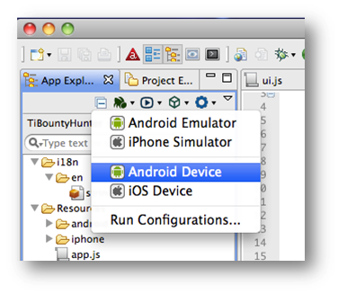
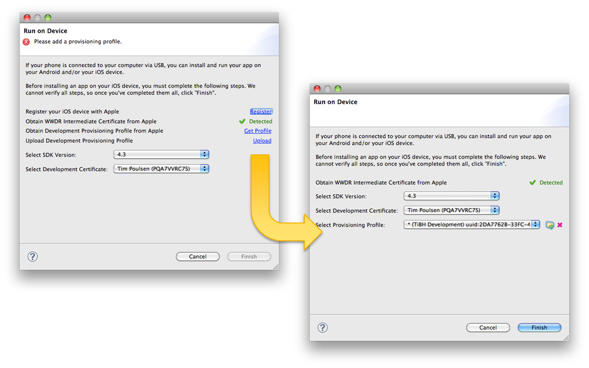

Deployment & Distribution
Module time: 60 mins(30 mins teaching, 30 mins for lab)
Agenda
- Deploying to a device for testing
- Publishing to the Android Market
- Publishing to the AppStore
- AdHoc, Enterprise, and private distribution
- Lab Exercise
Deployment
Getting your app onto a device for testing
Locally connected devices
Remote devices
iOS and Android processes very different
You can deploy over a USB connection
There are techniques for deploying to remote devices
iOS/Android processes different
Android Deployment
Let’s talk first about deploying your app for testing on Android devices
Android deployment for testing

Simple, two-step process for Android

First, configure device for testing
Windows users: need to install drivers specific to your device
Linux users: need to create USB config
See the wiki
Local Android deployment
- Connect device to USB port

Android deployment for testing is pretty simple
Can also manually install the APK via ADB
Or by transferring apk to device and opening with a file manager
Ti Studio signs APK with a debug compatible certificate. You could go through the signing steps but that’s unnecessary
Remote Android deployment
Get the APK to the user's device
Email
Post on a web site
Distribution framework
Just get the APK onto the user’s device
Use the apk-debug version to skip code signing steps
Email, post on a web site, share through Dropbox
Over-the-air system like HockeyKit can automate deployment and updates
iOS deployment for testing

Six step of Apple’s process – don’t go in-depth here
Apple Developer Program
Free to register, download SDK
Annual fee for iOS Developer program
Individual, Company, Enterprise, & University programs
You can register for free
Need to pay to publish and distribute apps
Various levels with varying documentation requirements and fees
Developer's certificate

Certificate identifies you as the developer
Create with Keychain Access
Upload CSR file to provisioning portal
Download and install the resulting certificate into login keychain
Also need Apple’s WWDR certificate
Register devices

Register devices used for testing
Need the UDID
Get that from Xcode or iTunes
Enter at Provisioning Portal
Create an AppID
Unique identifier for your app
Bundle Seed ID - 10 character universally unique
CF Bundle Identifier - app name or wildcard
Bundle Identifier must be unique for Push, In-App purchases, Game Center
Bundle Seed ID generated by the Provisioning Portal
CF Bundle Identifier you specify
Could name a specific app
Could be asterisk (wildcard)
Need specific name, not wildcard for Push Notification, In-App purchases, and Game center
Provisioning profile

Provisioning profile = collection of your certificate, app ID, and device IDs
Install to device to enable testing
You’ll create a similar provisioning profile for final distribution
Install the provisioning profile
Option 1: Drag & Drop to Xcode

Ultimately, you need to install to Xcode
You can drag & drop
or install via Ti Studio (next slide)
Install the provisioning profile
Option 2: Install via Titanium Studio

If not installed via Xcode, click Upload and Ti Studio will install for you
Ti Studio should recognize certificates in your keychain
Installing to local test device
Connect via USB
Choose iOS Device from Run menu
Install IPA using Xcode or iTunes sync
Finally, install to your locally connected device
Distributing to remote testers
Email mobileprovision file and IPA
Over-the-air distribution systems:
TestFlightApp
Diawi
AppSendr
HockeyKit
Distribution systems: basically you upload to a web server
Users are notified on their devices to install or upgrade
Fee or free services
HockeyKit is an open source, DIY system you install on your web server, supports both iOS and Android distribution
Q&A

Lab Goals
Requirements:
- Pull in an RSS feed and place the results in a TableView
- Create an "about" page using local HTML
Demo and Lab URL
Demo – Lab285:- Show scrolling list of news items
- Click one to show web view
- Click About tab to show local HTML data
Switched RSS feed might have gone stale, use Dev blog instead:
http://developer.appcelerator.com/blog/feed
Lab Exercise

Code Walkthrough – Lab285
app.js
- show URL at top
- xhr.onload ~line 66
- xml = this.responseXML
- talk through walking the XML DOM
- loop through items array to build table rows
- point out custom row.link property
- tableview event listener
- custom property (win.myurl) on window
showweb.js- creating the web view (line 2)
- loads url passed in via custom window property
Scroll back to top to point out local HTML
Could load from about.html instead